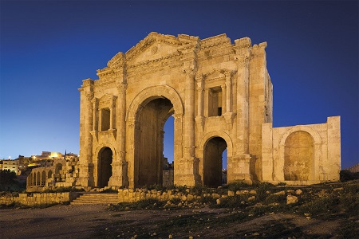
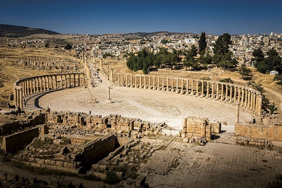

|
Jordania Romana
Gerasa,Jerash La Pompeya asiática. Es la segunda principal atracción turística de Jordania, después de Petra. La antigua ciudad de Jerash, fue ocupada por asentamientos humanos, desde hace más de 6.500 años.
La ciudad vivió su época dorada durante
el dominio romano y hoy en día se considera una de las ciudades romanas mejor
conservadas de todo el mundo. Jerash fue conquistada por Pompeyo en el 63 a.e.c. La calle de las columnas conserva el pavimento original, el cardo,
de unos 800 metros de longitud.
 La plaza oval. Mide 90x80 m., está rodeada por una ancha acera y un conjunto de columnas jónicas que datan del siglo I. Foto: Kitti Boonnitrod-Getty images
 El circo tiene diez puertas de salida (carceres), en contraste con las doce habituales, que han sido reconstruidas. El resto de sillares que faltaban se han extraído y tallado de nuevo. Las gradas (cavea) tenían 4 m de profundidad y 16 filas de asientos. Tenía un aforo para 15.000 espectadores que, según cuentan, hablaban griego incluso durante la dominación romana. Actualmente se recrean carreras y espectáculos que recrean la época romana. Conocida durante la Edad del Hierro como Rabbath-Ammon y, más tarde, como
Philadelphia. De las Ruinas romanas de Ammán destaca el anfiteatro romano.
Es el más impresionante legado romano de Ammán, construido en época de Antoninus
Pius (138-161). Situado en la ladera de la montaña en la colina de la ciudadela.
Mádaba El mosaico de la iglesia de San Jorge de Mádaba. Petra La antigua ciudad de Petra es uno de los tesoros nacionales de Jordania y, la atracción turística más conocida del país. El monumento más famoso de Petra es el Tesoro, que aparece imponente al final del Siq. También destacan cientos de edificios, tumbas, baños, salones funerarios, templos, entradas arqueadas, calles con columnas y evocadoras pinturas en la roca, sin olvidar el teatro al aire libre con 3.000 asientos y un gigantesco monasterio del siglo I. Pella, Tabqat Fahl Pella, hoy llamada Tabaqat Fahl, en Jordania al este de Irbid. Pella, Tabaqat
Fahl; es uno de los sitios más antiguos en Jordania. Habitada desde el
Neolítico.
Umm Qais ciudad jordana ubicada en el
emplazamiento de la antigua ciudad romano-helenística de Gádara. Dion Dion (Adun o Capitolias) es el nombre de la antigua ciudad miembro
de la Decápolis. La ubicación exacta de la ciudad está todavía en disputa, pero
se cree que está en el sitio de Beit Ras o Al Hisn, en torno a la ciudad de
Irbid, en Jordania. Raphana, Abila Raphana se encuentra al norte de Umm Qais. en medio de verdes campos agrícolas en el moderno Ain Quweilbeh. Templos romanos, iglesias bizantinas y principios de las mezquitas se encuentran en medio de olivares y campos de trigo. Fue habitada hace desde la Edad de Bronce, y parece haber sido utilizado continuamente por el hombre desde entonces. Si bien varias de sus antiguas estructuras se han excavado incluyendo acueductos, tumbas, las puertas y edificios públicos, Abila es especialmente fascinante porque gran parte de sus restos no se han excavado y son visibles superficialmente.
|